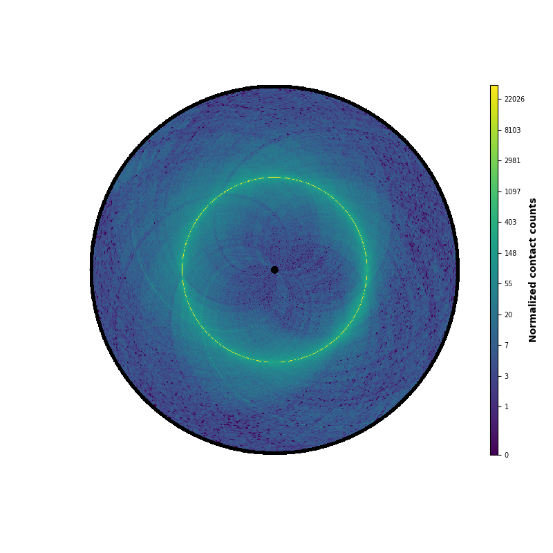
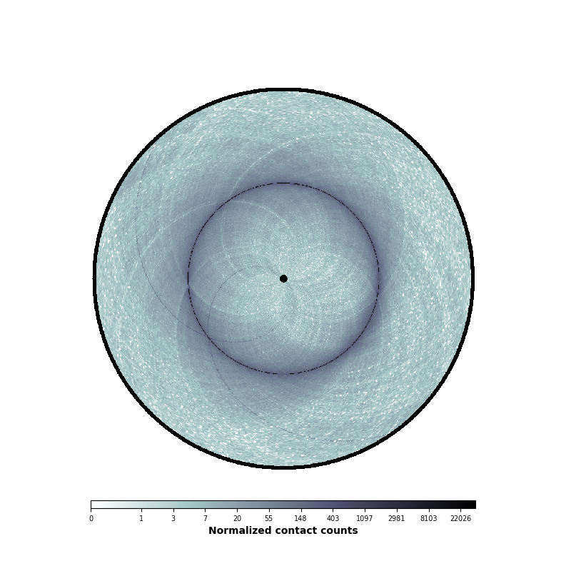

Note
Go to the end to download the full example code. or to run this example in your browser via Binder
Colorbars¶
Small example showcasing how to plot a vertical or horizontal colorbar.
from iced.normalization import ICE_normalization
from circhic import datasets
from circhic._base import CircHiCFigure
# Load the data, compute the cumulative raw counts.
data = datasets.load_ecoli()
counts = data["counts"]
lengths = data["nbins"]
# Normale the data using ICE, and keep the biases
counts, bias = ICE_normalization(counts, output_bias=True)
A simple vertical colorbar
circhicfig = CircHiCFigure(lengths)
im, ax = circhicfig.plot_hic(counts)
cab = circhicfig.set_colorbar(im)
cab.set_label("Normalized contact counts", fontweight="bold")

A simple horizontal colorbar
circhicfig = CircHiCFigure(lengths)
im, ax = circhicfig.plot_hic(counts, cmap="bone_r")
cab = circhicfig.set_colorbar(im, orientation="horizontal")
cab.set_label("Normalized contact counts", fontweight="bold")

Total running time of the script: (0 minutes 2.410 seconds)